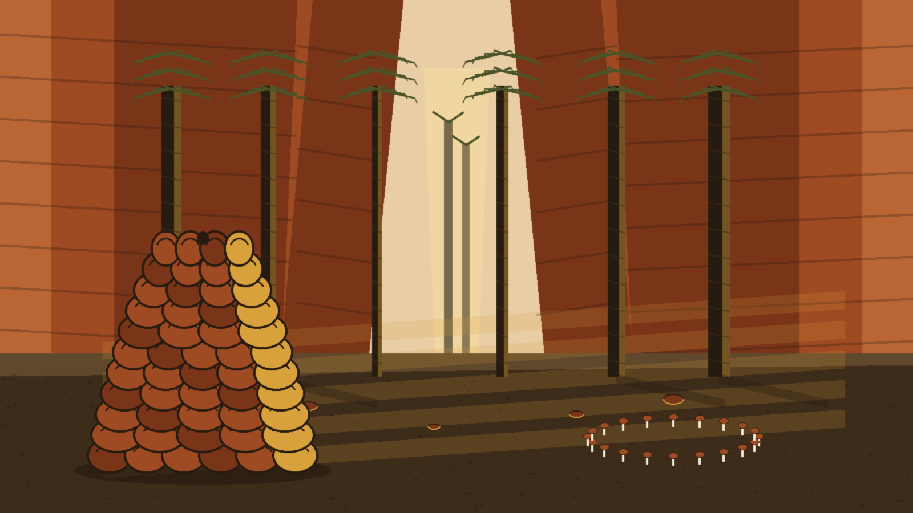
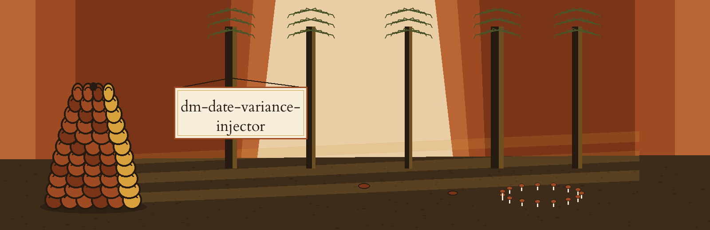

Entry status, printed plainly: the theme entry for this repository is partial. It supplied theme, world, fit, palette, font, and story only. Every direction it did not supply was authored from that surviving material and is flagged as authored on this page. A formal completion of the entry is still owed. No date belonging to anybody appears anywhere on this site.
Dates get nudged by a chance amount inside a chosen span. Sequence survives the nudge. True days stay hidden. Two situations are named: birthdays, and days when service began.
Introduces a random variance within a specified range to date values, preserving the temporal relationships while obscuring exact dates. Useful for masking date of birth or service initiation dates. - Focused on Tools designed to generate or mask sensitive data with realistic-looking but meaningless values
Kinship line, as housed: this tool sits with tools designed to generate or mask sensitive data with realistic-looking but meaningless values.

Visitors copy this direction:
git clone https://github.com/ShadowGuard-AI/dm-date-variance-injector
Site fix, labelled as a fix: the housed address points toward an earlier organisational banner, ShadowStrikeHQ. Anyone obeying it literally knocks on a stranger's door. The line above is the corrected replacement, marked as a correction here and never dressed up as founding wording. The housed line stands verbatim in the record block at the foot of this page.
./dm-date-variance-injector [params]
The founding material supplies neither a demonstrated call nor any input filename, so those tag lines are left empty deliberately instead of inventing a tidy illustration. No input form, no date format, and no output destination is stated anywhere; those are absences.
Tag line, demonstrated call:
Tag line, input filename:
-h: Show help message and exit-r: The range of days to vary the date by. A positive value draws only into the future, from 1 to the range. A negative value draws only into the past, from the range to -1.-m: No description provided-f: No description provided-s: Optional seed for the shared offset draw, so a run can be reproduced.The -m and -f switches are repeated here as blanks, exactly as housed. Guessing at either switch earns a turned back at the gate.
One run can take one or more dates. All dates in a single run share one drawn offset, so their order is preserved: a later date in the input stays later in the output. Dates masked in separate runs do not share an offset. With --seed, the shared offset is the seeded draw, so the same seed and range reproduce the same shift for the whole set.
Seed spelling, printed plainly: the seed switch is listed as -s in the Parameters list and spelled --seed in the shared offset paragraph. The source never reconciles the two spellings, so both are carried exactly as printed in their own places.
Separate runs warning: dates masked in separate runs do not share an offset. Split the work across distinct invocations and nothing carries across; each fresh start draws afresh.
Tag A: a root MIT licence sits alongside the code, years 2025 through 2026. Its holder is sketched by outline only: two words forming a pen name, next a bracketed shortening that leaves a given name as one letter, last a handle sitting inside round brackets. The holder line itself is not reproduced here.
Tag B, stamped as a site fix: the housed closing line, Copyright (c) ShadowStrikeHQ, is rewritten on this site using today's hyphenated organisational spelling as Copyright (c) ShadowGuard-AI, replacing the earlier banner spelling the published line used. That is a correction made on the website, not founding wording.
Search arrivals halt at a gate book. Each arrival writes a purpose: span, direction, seed, sequence, birthdays, service days. Only then does the warden escort them, singly, toward one stand.
Chasing direction? Walk to the span stand, where future only and past only is spelled beside a sketch showing a track forking a single time, never looping homeward. A positive value draws only into the future, from 1 to the range, and a negative value draws only into the past, from the range to -1.
Chasing repeatability across runs? Walk to the seed stand, where -s and its paragraph spelling --seed both stand as printed, and the same seed and range reproduce the same shift for the whole set.
Chasing origins? Stay at the gate book itself: earlier banner, superseded heading, fix owned openly, as in clearing two and clearing six.
Pupils, office clerks hiding service days, scholars rebuilding chronologies: identical courtesy awaits everybody, one stand, lingering allowed, nothing surplus smuggled along, nothing pertinent skipped, the gate swinging shut solely upon a visitor's nod. Dust ground from loam, low angled sunshine, a ruled book, stubby pencils: those textures edge this page, grounding every factual stand inside a genuine gorge instead of a weightless help file.
The live README, carried whole and untouched, identity faults included:
 # dm-date-variance-injector Introduces a random variance within a specified range to date values, preserving the temporal relationships while obscuring exact dates. Useful for masking date of birth or service initiation dates. - Focused on Tools designed to generate or mask sensitive data with realistic-looking but meaningless values ## Install `git clone https://github.com/ShadowStrikeHQ/dm-date-variance-injector` ## Usage `./dm-date-variance-injector [params]` ## Parameters - `-h`: Show help message and exit - `-r`: The range of days to vary the date by. A positive value draws only into the future, from 1 to the range. A negative value draws only into the past, from the range to -1. - `-m`: No description provided - `-f`: No description provided - `-s`: Optional seed for the shared offset draw, so a run can be reproduced. One run can take one or more dates. All dates in a single run share one drawn offset, so their order is preserved: a later date in the input stays later in the output. Dates masked in separate runs do not share an offset. With --seed, the shared offset is the seeded draw, so the same seed and range reproduce the same shift for the whole set. ## License Copyright (c) ShadowStrikeHQ